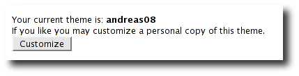
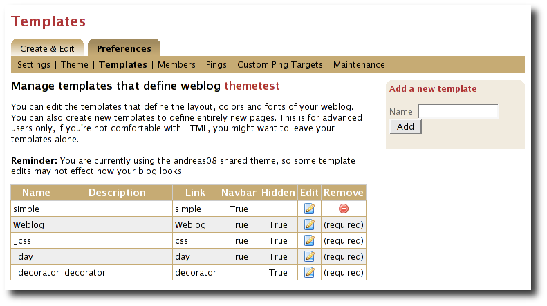

Table of Contents
1 - Introduction 3
2 - Overview 4
2.1 - Page templates 4
2.2 - The Velocity template language 4
3 - Editing and creating page templates 6
3.1 - The Weblog template 6
3.2 - The _day template 8
3.3 - Customizing your theme 10
3.4 - Editing and creating page templates 11
4 - Using models, objects and macros 13
4.1 - Accessing data via models and objects 13
4.2 - Calling macros 14
4.3 - A word about pagers 14
5 - Model Object Reference 15
5.1 - $config 15
5.2 - $model 16
5.3 - $url 18
5.4 - $utils 19
6 - Data Object Reference 20
6.1 - Bookmark 20
6.2 - Bookmark Folder 20
6.3 - Comment 21
6.4 - Page Template 21
6.5 - Referrer 21
6.6 - User 22
6.7 - Weblog 22
6.8 - Weblog Category 23
6.9 - Weblog Entry 23
6.10 - Weblog Entry Attribute 24
7 - Macro Reference 25
7.1 - Entry macros 25
7.2 - Comment macros 25
7.3 - List macros 25
7.4 - Menu macros 25
7.5 - Search macros 25
7.6 - Misc. macros 25
8 - Additional models 26
8.1 - $planet 26
8.2 - $site 26
1 - Introduction
If you know a little about HTML and CSS, then you'll find that it's easy to customize the appearance, layout and content of your Roller-based weblog. You can change the appearance of any of your weblog's pages and add as many new pages as you want. Any Roller user can do it through Roller's web-based interface and it's all done with Roller's simple and easy-to-use template language. In this guide, we'll tell you how. We'll start by explaining how Roller's weblog template system works then we'll provide a reference to the objects and macros that you can use in your templates.
NOTE: If you have only AUTHOR or LIMITED permissions within a weblog then you won't have access to the Preferences->Theme or Preferences->Templates pages and you won't be able to change or customize your theme. You beed to have ADMIN permission within a weblog to be able to do the things described in this guide.
NOTE: It is possible for a Roller site administrator to disable theme customization. So if you do have ADMIN permission in your weblog and you still don't see the Preferences->Templates page, perhaps your Roller site does not allow customization.
2 - Overview
Each Roller weblog is defined by a set of page templates, which you can edit to customize the content, layout and appearance of your weblog.
2.1 - Page templates
When you create a new Roller weblog you must pick a theme to define the new weblog's appearance and layout. A theme is just a small set of templates, where each template contains HTML code, template language expressions and macros. What's a template? A template for an HTML web page is simply an HTML web page with some Velocity code embedded inside. For example, this is a valid Roller template, with one Velocity expression:
<html>
<body>
My blog is named $model.weblog.name
</body>
</html>
The string "$model.weblog.name" is a template language expression and when Roller displays the template, that expression will be replaced with the name of the weblog.
Note that $model is something special. Roller makes a set of objects, known as models, available to page templates. In the example above, we see only the $model object, but here are others. You'll learn more about models in Section 4 and Section 5 provides a complete reference.
2.2 - The Velocity template language
The simple template language that we use inside Roller page templates is called Velocity. It's designed to be simple and easy for even non-programmers, but it's also a simple programming language. You can set variables, use if-else conditional logic and create loops.
For example, this Roller page template will list the categories available in your weblog except for the one named Music:
<html>
<body>
My blog is named $model.weblog.name. These are my categories:<br>
#foreach ($cat in $model.weblog.categories)
#if ($cat.name != "Music")
$cat.name<br>
#end
#end
</body>
</html>
Velocity also supports the concepts of macros. A macro is essentially a Velocity method call. We use them in Roller to generate HTML. For example, as illustrated below, to display a bookmark folder you first retrieve if from the weblog and second pass it to the #showBookmarkLinksList() macro to display it as an HTML <ul> list.
<html>
<body>
<h2>Blogroll</h2>
#set($rootFolder = $model.weblog.getBookmarkFolder("/"))
#showBookmarkLinksList($rootFolder false false)
</body>
</html>
You'll learn more about macros in Section 4 and Section 7 provides a complete reference to the standard Roller macros. If you want more information on Velocity. the Here are links to the User and Reference guides:
Now that we've covered the basic concepts of page templates and the Velocity template language, let's dig into the details of editing templates.
3 - Editing and creating page templates
After you've used Roller Preferences->Themes page to customize your weblog theme, you can edit and create page templates through the Preferences->Templates page. We'll show you how to do that, but first you need to understand how the required pages, found in every theme, work together to display a weblog.
Every theme is different, but all themes must have two required pages -- pages that you cannot rename or delete. These are the Weblog template, which defines the main page of your blog, and the _day template, which defines how each day's worth of blog entries is displayed on your main page. Some themes also have a required page named _css which defines the CSS style code used by the weblog.
First, let's look at a simple Weblog template.
3.1 - The Weblog template
Below is a simple Weblog page that displays all of the data that weblog typically contains including recent entries with paging to past entries, category link, feed links, a calendar and feed auto-discovery. Check the annotations for more detail.
Listing 1: a typical Weblog template
<!DOCTYPE html PUBLIC "-//W3C//DTD HTML 4.01 Transitional//EN">
<html><head>
<title>$model.weblog.name : $model.weblogPage.name</title> #1
#showAutodiscoveryLinks($model.weblog) #2
<style type="text/css">#includeTemplate($model.weblog "_css")</style> #3
</head>
<body>
<table border="0" align="center" width="95%">
<tr>
<td class="entries" width="80%" valign="top">
<h1>$model.weblog.name</h1> #4
<p class="descrip">$model.weblog.description</p>
#set($rootCategory = $model.weblog.getWeblogCategory("nil")) #5
#showWeblogCategoryLinksList($rootCategory false false)<br>
#set($pager = $model.getWeblogEntriesPager()) #6
<div class="next-previous">
#if ($model.results) #7
#showWeblogSearchAgainForm($model.weblog)
#showNextPrevSearchControl($pager)
#else
#showNextPrevEntriesControl($pager) #8
#end
</div>
#showWeblogEntriesPager($pager) #9
#if ($model.permalink) #10
#showWeblogEntryComments($entry)
#showWeblogEntryCommentForm($entry)
#end
</td>
<td width="20%" valign="top">
<h2>Calendar</h2>
#showWeblogEntryCalendar($model.weblog "nil") #11
<h2>Feeds</h2>
#showAtomFeedsList($model.weblog) #12
<h2>Search</h2>
#showWeblogSearchForm($model.weblog false) #13
<h2>Links</h2>
#set($rootFolder = $model.weblog.getBookmarkFolder("/")) #14
#showBookmarkLinksList($rootFolder false false)
<h2>Navigation</h2>
#showPageMenu($model.weblog) #15
#showAuthorMenu(true) #16
<h2>Referrers</h2>
#set($refs = $model.weblog.getTodaysReferrers()) #17
#showReferrersList($refs 30 20)
</td>
</tr>
</table>
</body>
</html>
The above template includes a good mix of Velocity expressions and statements. There's a lot going on, so let's explain it in detail. Here's the point-by-point breakdown.
HTML title
For the HTML title we use the weblog's name, a colon and the name of the page template that is currently being displayed.Auto-discovery links
The #showAutodiscoveryLinks() macro adds the HTML <link> elements required for RSS and Atom feed auto-discovery as well as RSD for weblog clients.Include CSS styles
Here we use the include the theme's _css template directly in the page, right inside a pair of <style> tags.Display a page title
Here we use the weblog's name again in an <h1> title.Category links list
Display a list of weblog category links.Get entries pager
Get the entries pager object so we can display entries and a paging control.Show search results control?
Show search results pager control if search in progressElse . . .
Show normal entries pager control.Show entries
Show current page's worth of entries (or search results). Calls on _day template to do the display of each day's worth of entries.Show comments?
If we're on a permalink page, then show comments and comments formShow the calendar
Show the standard weblog calendar.Show feed links
Show links to all available Atom entry feeds, one per category.Search form
Show the weblog search form, false indicates no category chooser.Display blogroll
Display contents of the root bookmark folder.Show page menu
Display navigation bar of pages available in weblog.Show author menu
Display author's menu, only visible to authorized users.Display today's referrers
Display today's referrer URL with hit counts.
Note in point #9 that the display of the weblog entries is controlled by another template, the _day template. So next let's take a look at that _day template.
3.2 - The _day template
A theme's _day template is responsible for displaying one day's worth of weblog entries. Here's a typical _day template, one that corresponds to the above Weblog template.
Listing 2: a typical _day template
<div class="dayBox">
<div class="dayTitle">
$utils.formatDate($day, "EEEE MMM dd, yyyy") #1
</div>
#foreach($entry in $entries) #2
<div class="entryBox">
<p class="entryTitle">$entry.title</p> #3
<p class="entryContent">
#if($model.permalink) #4
$entry.displayContent
#else
$entry.displayContent($url.entry($entry.anchor))
#end
</p>
<p class="entryInfo">
Posted at
<a href="$url.entry($entry.anchor)"> #5
$utils.formatDate($entry.pubTime, "hh:mma MMM dd, yyyy")</a>
by $entry.creator.fullName in #6
<span class="category">$entry.category.name</span> | #7
#if ($utils.isUserAuthorizedToAuthor($entry.website)) #8
<a href="$url.editEntry($entry.anchor)">Edit</a> |
#end
#if($entry.commentsStillAllowed || $entry.commentCount > 0) #9
#set($link = "$url.comments($entry.anchor)" )
<a href="$link" class="commentsLink">
Comments[$entry.commentCount]</a>
#end
</p>
</div>
#end
</div>
And here's a point-by-point description of the template language expressions and statements found in the above day template:
Display day header.
For the day header, we display the current date in a long format.Loop through day's entries.
Here we use a $foreach loop to iterate through the $entries collectionDisplay entry title.
Display the entry title in a <div> so that it can be easily styled.Display entry content or summary.
If we're on a permalink page, show the entry's content. Otherwise, show the summary if a summary is available.Display entry permalink.
Display permanent link to the entry.Display entry author's name.
Display the name of the author of the entry.Display entry category.
Display the name of the category associated with the entry.Show edit link.
If user is authorized, display link to edit the entry.Show comments link.
If comments are available or are still allowed, display link to entry comments.
Now you've seen the required templates and you've seen most of the commonly used macros in action, let's discuss the mechanics of customizing your theme.
3.3 - Customizing your theme
When you start a Roller weblog and you pick a theme, your weblog uses a shared copy of that theme. The page templates that define your theme are shared by all of the other users who have also picked that theme. Using a shared theme is nice because, when your Roller site administrator makes fixes and improvements to that shared theme, then you'll get those automatically. But you can't customize a shared theme. Before you can customize your theme, you've got to get your own copy of the theme's page templates like so:
Go to the Preferences->Theme page.
Login to Roller and go to your weblog's Preferences->Themes page. Shown below.
Pick and save the theme you'd like to customize.
If you want to customize your weblog's current theme, then you can skip this step. If you have't decided which theme to customize, then use the preview combo-box to pick the theme that you'd like to use as your starting point. Once you've picked your theme, click the Save button to save it as your current theme.
Click the Customize button.
Click the Customize button to customize your theme. When you do this, copies of the themes page templates will be copied into your weblog so you can edit them.Customize your theme by editing and creating page templates.
Go to the Preferences->Templates page, edit your page templates and add new ones as needed – as described in the next section.
And if you get tired of your customized theme, just use the Preferences->Theme page to switch back to a shared theme – or pick another one to customize. Now let's discuss editing and creating templates.
3.4 - Editing and creating page templates
Once you've got the page templates copied into your weblog, you can do just about anything you want to your theme. You can use the Preferences->Templates page, shown below, to create a new page, delete a page or choose a page to edit.

Now might be a good time to describe the page template properties since you can see them in the table above. The properties are name, description, link, navbar and hidden. Let's explain each:
Name: Each template has a name, which you can display in your templates. You can also use the #includeTemplate() macro to include the contents of one page in another, by referring to the template by name.
Description: You can enter an option description for each page for display or just as a reminder to yourself as to the purpose of the page.
Link: Each page template has a link property, which is used to form the URL for the page. For example, if the page's name is “simple” then the page will be available at the URL “/page/simple” within the weblog.
Navbar: This is a flag that indicates whether the page is to be shown in the weblog navigation bar that is produced by the #showPageMenu() macro.
Hidden: This is a flag that indicates that a page is hidden and not possible to access via URL.
For new templates that you add, you'll be able to edit all of those properties using the Preferences->Template->Edit Template page (shown below).
But the rules for required pages are different. The weblog pages named Weblog, _day and _css are considered to be required pages. You can change the template code for those pages but you cannot edit the name, link or any other properties.
Now that you know how to edit and create page templates, let's discuss how to use the models, objects and macros that Roller makes available to template authors.
4 - Using models, objects and macros
Roller makes weblog data available to page templates in the form of models and data objects and makes it easy for you to generate the HTML for your weblog by providing macros. Let's explain these new terms.
Model objects: Model objects provide access to data from Roller and specifically from your Roller weblog. A model object returns data objects or collections or data objects. In Section 6, we'll describe each model, it's properties and methods.
Data objects: Data objects each represent an item of data within your Roller weblog, for example there is a Weblog object that represents your weblog, WeblogEntry objects which represent individual weblog entries and Bookmark objects that represent items in your blogroll. In Section 7, we'll describe each data object, it's properties and methods.
Macros. A macro is Velocity routine that generates HTML based on a data object or a collection of data objects. In Section 8 we'll describe each of Roller's build-in macros.
Let's discuss how to access data via models and data objects.
4.1 - Accessing data via models and objects
Models and data objects are objects and there are two ways to access data from objects. One way is to access an objects properties. Another is to call the object's methods. Let's talk about these two techniques.
4.1.1 - Accessing object properties
To access an objects properties, you use a simple dot-notation. For example, if you want to display the Roller version number property of the $config model object, you do something like this in your page:
<p>$config.rollerVersion</p>
Or, if you'd like to save the Roller version number in a variable named $version, you'd do this:
#set( $version = $config.rollerVersion )
And some properties are themselves objects, which in turn have their own properties and methods. For example, you can get the Weblog object from the $model object and from the weblog object you can display the weblog's name and description like so:
<p>$model.weblog.name</a>
<p>$model.weblog.description</a>
4.1.2 - Calling object methods
Another way to access an object's data is to call an objects's methods. Methods are different from properties because they require parameters. You use the same simple dot-notation, but you must end the expression with a list of parameters in parentheses. For example, if you'd like to display an image from within your theme, you can use the $url model like so:
<img='$url.themeResource(“basic”, “background.gif”)'></a>
Argument one is the name of the theme and argument two is the name of a file that exists in the theme's directory. Note that a comma is used to separate the arguments.
4.2 - Calling macros
In page templates, you get data from objects and you use template code to display that data as HTML. To help you along, Roller includes some macros which can be used to generate commonly used HTML constructs on your weblog. There are macros for displaying your weblog entries, displaying your blogroll and displaying a comment form.
Calling a macro is a little different from calling a macro. A macro call starts with a # pound-sign, followed by the macro name and the macro parameters enclosed in parentheses. For example, you call the weblog calendar macro like so:
#showWeblogEntryCalendar($model.weblog "nil")
Argument one is the weblog for the calendar and argument two is the category, where “nil” indicates that no category is specified. Note that the arguments for a macro are separated by a space and NOT a comma as was the case for methods.
4.3 - A word about pagers
There are many cases in a weblog when we want to display a large collection of values and we want that collection to be page-able – that is, we want a Next link to go to the next page of results and possibly a Previous link to go to the previous page. So in Roller, we've introduced the concept of a pager. A pager is a special type of object that makes it easy to display a page-able collection of items within a page template. You can see a pager in action in Listing 1 above.
You probably won't need to use a pager object directly, since the macros do it for you. But if you do, here's what a pager looks like:
$pager.homeLink – URL of the first page of results
$pager.homeName – Name to be displayed for that URL
$pager.nextLink – URL of the next page of results
$pager.nextName – Name to be displayed for that URL
$pager.prevLink – URL of the previous page of results
$pager.prevName – Name to be displayed for that URL
$pager.items – Collection of data objects; the current page of results
There is also a WeblogEntryPager interface that provides some extra methods for next-collection paging. The collection methods exist because often, with weblog entries, we are paging through the entries that exist within one time period, a month for example. In that case. the nextLink point to the next page of results within that month and the nextCollectionLink points to the next months entries.
$pager.homeLink – URL of the first page of results
$pager.homeName – Name to be displayed for that URL
$pager.nextLink – URL of the next page of results
$pager.nextName – Name to be displayed for that URL
$pager.prevLink – URL of the previous page of results
$pager.prevName – Name to be displayed for that URL
$pager.nextCollectionLink – URL of next collection in sequence
$pager.nextCollectionName – Name to be displayed for that URL
$pager.prevCollectionLink – URL of previous collection in sequence
$pager.prevCollectionName – Name to be displayed for that URL
$pager.items – Collection of data objects; the current page of results
5 - Model Object Reference
This section covers the standard model objects available in all page templates:
$config – provides access to the Roller site configuration parameters
$model – provides access to data for one specific weblog
$url – for creating Roller URLs and URLs within one specific weblog
$utils – utility methods needed within page templates
For each model, we'll cover properties and methods.
5.1 - $config
The $config model provides access to the Roller configuration data that you'll need in your weblog.
5.1.1 - $config Properties
|
Property Name |
Type |
Description |
|---|---|---|
|
$config.commentAutoFormat |
Boolean |
True if comments should be formatted with added line feeds. |
|
$config.commentEmailNotify |
Boolean |
True if notification of new comments via email is enabled. |
|
$config.commentEscapeHtml |
Boolean |
True if all HTML will be stripped of comments before display. |
|
$config.feedMaxSize |
Maximum number of items displayed in RSS and Atom feeds. |
|
|
$config.feedStyle |
Boolean |
True if feeds are displayed with user-friendly formatting (via XSL stylesheet). |
|
$config.rollerVersion |
String |
Version number of Roller build. |
|
$config.registrationEnabled |
Boolean |
True if new user registration is enabled. |
|
$config.registrationURL |
Boolean |
URL of new user registration site (if not using standard Roller registration). |
|
$config.siteDescription |
String |
Description of this Roller site. |
|
$config.siteEmail |
String |
Email address of this Roller site's administrator. |
|
$config.siteName |
String |
Name of this Roller site. |
|
$config.siteShortName |
Short name of this Roller site. |
5.1.2 - $config Methods
The $config model also provides a set of methods for accessing properties by name. Generally, you should be able to get the configuration data you need from the properties above. You shouldn't need to call these methods, but just so you know:
boolean getBooleanProperty(String propertyName)
Returns the named runtime property as a booean.String getProperty(String propertyName)
Returns the named runtime property as a String.int getIntProperty(String propertyName)
Returns the named runtime property as an integer.
5.2 - $model
The $model object provides you with access to all of the data objects that make up your weblog. You can get a pager object to access your weblog entries, the weblog entry referenced by the request, the category object referenced by the request and the weblog itself.
The diagram below show the objects you can get from the $model and the collections of objects that you can get from those. See Section 6 for a complete reference to the data objects and their properties.


Now let's the details of the $model object, starting with properties.
5.2.1 - $model Properties
|
Name |
Type |
Description |
|---|---|---|
|
$model.commentForm |
CommentForm |
On a comment-page, this object will be populated with the comment form values. Values available are $model.commentForm.name, $model.commentForm.url and $model.commenForm.content. |
|
$model.locale |
String |
Name of locale if one is specified in the URL. |
|
$model.weblog |
Weblog |
Current weblog being displayed. |
|
$model.weblogCategory |
Weblog category specified by URL or null if not specified. |
|
|
$model.weblogEntry |
WeblogEntry |
Weblog entry object specified by URL or null if none specified. |
|
$model.weblogEntriesPager |
Pager |
Weblog entry pager for paging over entries specified by URL. |
|
$model.weblogPage |
PageTemplate |
Weblog page object specified or implied by URL. |
|
$model.permalink |
Boolean |
True if URL specifies one specific Weblog Entry permalink. |
|
$model.searchResults |
Boolean |
True if displaying search results. |
5.2.2 - $model Search Properties
If the URL indicates a search, then the pager returned by $model.weblogEntriesPager will return entries from the search and some additional properties will be available on the $model object:
|
Name |
Type |
Description |
|---|---|---|
|
$model.categories |
List of Strings |
List of category names available in search. |
|
$model.hits |
Integer |
Total number of hits found. |
|
$model.limit |
Integer |
Max. number of search results displayed per page. |
|
$model.offset |
Integer |
Offset into current page of search results. |
|
$model.weblogSpecificSearch |
Boolean |
True if search is specific to one weblog. |
5.2.3 - $model methods
The $model object also provides a couple of methods:
Pager getWeblogEntriesPager(String catPath)
Returns a pager that contains only entries from the specified category.String getRequestParameter(String paramName)
Returns a specific request parameter from the URL.
5.3 - $url
To ensure that your URLs are formed correctly, you should use the $url model to form all URLs that point to the Roller site or to your weblog. Every possible type of Roller URL is supported:
|
Name |
Type |
Description |
|---|---|---|
|
$url.absoluteSite |
String |
Absolute URL of Roller site. |
|
$url.category(String catPath) |
String |
URL for one categor within weblog. |
|
$url.category(String catPath, int pageNum) |
String |
URL for one categor within weblog, w/page. |
|
$url.commentAuthenticator |
String |
URL of comment authenticator. |
|
$url.comment(String anchor, String timeStamp) |
String |
URL of comment for entry specified by anchor. |
|
$url.comments(String anchor) |
String |
URL of comments for entry specified by anchor. |
|
$url.createEntry |
String |
URL for new-entry page in Roller UI. |
|
$url.editEntry(String anchor) |
String |
URL for edit-single-entry page in Roller UI. |
|
$url.date(String dateString) |
String |
URL for one specific 6 or 8 character date. |
|
$url.date(String dateString, int pageNum) |
String |
URL for one specific 6 or 8 character date, w/page. |
|
$url.editSettings |
String |
URL for edit-weblog-settings page in Roller UI. |
|
$url.entry(String anchor) |
String |
URL for entry specified by anchor. |
|
$url.feed.entries.atom |
String |
URL of entries feed (Atom). |
|
$url.feed.entries.rss |
String |
URL of entries feed (RSS). |
|
$url.feed.comments.atom |
String |
URL of comments feed (Atom). |
|
$url.feed.comments.rss |
String |
URL of comments feed (RSS). |
|
$url.home |
String |
URL of weblog. |
|
$url.login |
String |
URL of login page. |
|
$url.logout |
String |
URL of logout page. |
|
$url.rsd |
String |
URL of Really Simple Discovery (RSD) service. |
|
$url.page(String pageLink) |
String |
URL of page specified by pageLink. |
|
$url.page(String pageLink,
String dateString, |
String |
URL of page specified by pageLink, dateString, catPath and pageNum. |
|
$url.search |
String |
URL of search. |
|
$url.search(String query, |
String |
URL of search for specific search string, catPath and pageNum. |
|
$url.site |
String |
Relative URL of Roller site. |
|
$url.resource(String filePath) |
String |
URL of uploaded file resource in weblog. |
|
$url.themeResource(String theme, String file) |
String |
URL of a resource within a Roller theme. |
|
$url.themeResource( |
String |
Absolute URL of a resource within a Roller theme. |
|
$url.trackback(String anchor) |
String |
Trackback URL for entry specified by anchor. |
5.4 - $utils
The $utils object provides all of the string manipulation methods you'll ever need for your weblog, including methods for formatting dates, escapeing HTML, encoding URLs and even removing HTML entirely. Here's a comprehensive list of the $utils methods:
String addNowFollow(String s)
Adds the nofollow attribute to any HTML links found within the string.String autoformat(String s)
Converts any line-breaks in the string with <br> tags.String decode(String s)
Decodes a string that has been URL encoded.String encode(String s)
Applies URL encoding to a string.String escapeHTML(String s)
Escapes any non-HTML characters found in the string.String escapeXML(String s)
Escapes any non-XML compatible characters found in the string.String formatDate(Date date, String fmt)
Formats a date object according to the format specified (see java.text.SimpleDateFormat)String formatIso8601Date(Date date)
Formats a date object using ISO-8601 date formatting.String formatRfc822Date(Data date)
Formats a date object using RFC-822 date formatting.boolean isEmpty(Object o)
Returns true if the object is null or if it is an empty string.boolean IsNotEmpty(Object o)
Returns true of the object is not null or is a non-empty string.String removeHTML(String s)
Remove all HTML markup from a string.String replace(String str, String target, String replacement)
In the string str, replace the target string with the replacement string.String toBase64(String s)
Convert a string to Base64 encoding.String transformToHTMLSubset(String s)
Transform any HTML in the string to a safe HTML subset.String truncate(String str, int lower, int upper, String append)
Truncate a string str so that it is between lower and upper characters in length and add the append string.String unescapeHTML(String s)
Unscape a string that has been HTML escaped.String unescapeXML(String s)
Unescape a string that has been XML escaped.
That's it for the $url model and for models in general. Let's move on to the data objects.
6 - Data Object Reference
In this section we'll list each of the properties and methods of the Roller data objects. These are:
Bookmark: A single link within a weblog's web bookmark collection, exists with a Folder
Bookmark Folder: A Folder containing Bookmarks.
Comment: A Comment associated with a specific Weblog Entry
Page Template: An individual page template within a Weblog.
Referrer: A Referrer represents an external site that links to the Weblog
User: Represents a single user within the Roller site.
Weblog: a Weblog containing Weblog Entries, Page Templates, Bookmarks, etc.
Weblog Entry: an individual Weblog Entry
Weblog Entry Attrbute: a name value pair-associated with a Weblog Entry
Weblog Category: A category within a weblog, categories in Roller are hierarchical
6.1 - Bookmark
|
Name |
Type |
Description |
|---|---|---|
|
$bookmark.description |
String |
Description of the bookmark |
|
$bookmark.feedUrl |
String |
URL of the newsfeed associated with the bookmark |
|
$bookmark.folder |
BookmarkFolder |
Parent folder of the bookmark |
|
$bookmark.image |
String |
URL of image to be displayed for bookmark |
|
$bookmark.name |
String |
Name of the bookmark |
|
$bookmark.url |
String |
URL of the bookmark |
6.2 - Bookmark Folder
|
Name |
Type |
Description |
|---|---|---|
|
$folder.bookmarks |
Bookmarks contained in folder. |
|
|
$folder.description |
String |
Description of folder |
|
$folder.folders |
List of BookmarkFolders |
Folders contained in folder |
|
$folder.inUse |
Boolean |
True if folder contains other bookmarks or folders. |
|
$folder.name |
String |
Name of folder |
|
$folder.parent |
BookmarkFolder |
Parent of folder |
|
$folder.path |
String |
Path in the BookmarkFolder hierarchy |
|
$folder.website |
Weblog |
Weblog in which folder is contained |
6.3 - Comment
|
Name |
Type |
Description |
|---|---|---|
|
$comment.approved |
True if comment has been approved for display |
|
|
$comment .content |
String |
Content of the comment |
|
$comment .email |
String |
Email address of the commenter |
|
$comment .name |
String |
Name of the commenter |
|
$comment .notify |
Boolean |
True if commenter choose the 'please notify me via email' option |
|
$comment .pending |
Boolean |
True if comment is waiting for approval |
|
$comment .postTime |
Date |
Time that comment was created |
|
$comment .remoteHost |
String |
Host name or IP address of commenter |
|
$comment .spam |
Boolean |
True if comment is marked as spam |
|
$comment .url |
String |
URL of the commenter |
|
$comment .weblogEntry |
WeblogEntry |
Weblog entry with which comment is associated |
6.4 - Page Template
|
Name |
Type |
Description |
|---|---|---|
|
$page.contents |
The content of the page template, typically HTML and Velocity code |
|
|
$page.description |
String |
Description of the page |
|
$page.lastModified |
Date |
Date that page properties or content was last modified |
|
$page.link |
String |
String used to form URL to page |
|
$page.name |
String |
Name of the page |
|
$page.navbar |
String |
True if page should be included in page navigation menu |
|
$page.hidden |
String |
True if page is NOT callable by URL |
6.5 - Referrer
|
Name |
Type |
Description |
|---|---|---|
|
$referrer.dateString |
String |
Eight character date string implied by referred to URL |
|
$referrer.dayHits |
Integer |
Number of hits counted against this referrer today |
|
$referrer.displayUrl |
String |
URL to be displayed for this referrer |
|
$referrer.excerpt |
String |
Except extracted from referring site by linkback extractor |
|
$referrer.refererUrl |
String |
URL that refers to your weblog |
|
$referrer.refererPermalink |
String |
Permalink URL referrered by by the referrer |
|
$referrer.title |
String |
Title extracted from referring site by linkback extractor |
|
$referrer.totalHits |
Integer |
Total number of hits counted against this referrer |
|
$referrer.visible |
Boolean |
True if referrer should be displayed |
|
$referrer.weblogEntry |
WeblogEntry |
Weblog entry referenced by this referrer |
|
$referrer.website |
Weblog |
Weblog referred to by this referrer |
6.6 - User
|
Name |
Type |
Description |
|---|---|---|
|
$user.dateCreated |
Date that user was created |
|
|
$user.emailAddress |
String |
User's email address |
|
$user.fullName |
String |
Users full name |
|
$user.locale |
String |
User's locale |
|
$user.timeZone |
String |
User's timezone |
|
$user.userName |
String |
User's username |
6.7 - Weblog
|
Name |
Type |
Description |
|---|---|---|
|
$weblog.active |
True if weblog is considered active |
|
|
$weblog.allowComments |
True if comments are allowed in weblog |
|
|
$weblog.creator |
User |
User who created this weblog |
|
$weblog.dateCreated |
Date |
Date weblog was created |
|
$weblog.description |
String |
Description of weblog |
|
$weblog.emailAddress |
String |
Email address of weblog's managing editor |
|
$weblog.emailComments |
True if email notification of comments is enabled |
|
|
$weblog.emailFromAddress |
String |
Email address for from-address of notifications |
|
$weblog.enableBloggerApi |
True if remote blogging API is enabled |
|
|
$weblog.enabled |
True if weblog is enabled |
|
|
$weblog.entryDisplayCount |
Integer |
Default number of entries to display in pagers |
|
$weblog.handle |
String |
Simple string handle that uniquely identifies weblog |
|
$weblog.lastModified |
Date |
Timestamp of last modification to weblog |
|
$weblog.locale |
String |
Default locale used by weblog |
|
$weblog.moderateComments |
True |
True if comment moderation is enabled in weblog |
|
$weblog.name |
String |
Name of the weblog |
|
$weblog.pages |
List of PageTemplates |
Page templates of weblog |
|
$weblog.timeZone |
String |
Timezone of the weblog |
|
$weblog.todaysHits |
Integer |
Number of referrer hits counted today |
|
$weblog.todaysReferrers |
List of Referrers |
Today's referrers to this weblog |
|
$weblog.weblogCategories |
List of WeblogCategories |
Top-level categories of weblog |
Weblog Methods
List getRecentWeblogEntries(String cat, int max)
Get most recent WeblogEntries in the weblog up to the number max. You can specify a category name if you'd liike only entries from one category (or “nil” for all categories).List getRecentComments(int max)
Get most recent Comments in the weblog up to the limit max.List getWeblogCategories(String catpath)
Get WeblogCategories in folder found at the specified category path.WeblogCategory getWeblogCategoryByPath(String path)
Get weblog category specified by path.PageTemplate getPageByName(String name)
Get page template specified by name.PageTemplate getPageByLink(String link)
Get page template specified by link.
6.8 - Weblog Category
|
Name |
Type |
Description |
|---|---|---|
|
$category.description |
Descriptipm |
|
|
$category.image |
String |
URL of image to be displayed for category |
|
$category.inUse |
Boolean |
True if category is in use, i.e. if WeblogEntry objects use it |
|
$category.name |
String |
Name of the category |
|
$category.parent |
WeblogCategory |
Parent category |
|
$category.path |
String |
Absolute path to category in hierarchy |
|
$category.website |
Weblog |
Weblog that contains category |
|
$category.weblogCategories |
List of WeblogCategories |
Children of this weblog category |
6.9 - Weblog Entry
|
Name |
Type |
Description |
|---|---|---|
|
$entry.allowComments |
True if this weblog entry allows comments |
|
|
$entry.anchor |
String |
Simple string that uniquely identifies post in weblog |
|
$entry.categories |
Weblog categories associated with this entry |
|
|
$entry.category |
WeblogCategory |
Primary weblog category of this entry |
|
$entry.commentDays |
Integer |
Number of days that comments are allowed |
|
$entry.commentsStillAllowed |
Boolean |
True if comments are currently allowed |
|
$entry.contentSrc |
String |
URL of entry content, if out-of-line |
|
$entry.contentType |
String |
MIME content-type of entry |
|
$entry.creator |
User |
User who created the entry |
|
$entry.entryAttributes |
List of EntryAttributes |
Arbitrary name/value attributes associated with entry |
|
$entry.pubTime |
Date |
Timestamp when entry was published |
|
$entry.referers |
List of referrers |
List of referrers to entry (cleared nightly) |
|
$entry.rightToLeft |
Boolean |
True if entry text is to be dipslayed right-to-left |
|
$entry.status |
String |
Status of entry (i.e. PUBLISHED) |
|
$entry.summary |
String |
Raw summary text of entry |
|
$entry.text |
String |
Raw content text of entry |
|
$entry.updateTime |
Date |
Timestamp of last modification to entry |
|
$entry.website |
Weblog |
Entry's weblog |
6.10 - Weblog Entry Attribute
|
Name |
Type |
Description |
|---|---|---|
|
$att.entry |
Weblog entry associated with this attribute |
|
|
$att.name |
String |
Name of the attribute |
|
$att.value |
String |
Value of the attribute |
7 - Macro Reference
This section lists the macros that are available for use in Roller page templates and a brief description of how each works.
7.1 - Entry macros
#showWeblogEntriesPager($pager)
Displays the weblog entries contained in the specified $pager object.#showNextPrevEntriesControl($pager)
Display the next/prev links of the specified $pager object.
7.2 - Comment macros
#showWeblogEntryComments($entry)
Display the comments associated with the specified entry, not including those entries that are not approved for posting or that are marked as spam.#showWeblogEntryCommentForm($entry)
Display a comment form for adding a comment to the specified entry.
7.3 - List macros
#showWeblogEntryLinksList($entries)
Display a simple list of entries, with a title and link for each.#showBookmarkLinksList($folderObj $expanding $subfolders)
Displays all bookmarks in a specified bookmark folder object. If $expanding and $subfolders are set to true, then display the bookmarks as an expandable tree view.#showWeblogCategoryLinksList($categoryObj $expanding $subcats)
Displays all categories under a specified category object. If $expanding and $subcats are set to true, then display the categories as an expandable tree view.
7.4 - Menu macros
#showPageMenu($weblog)
Display a page navigation menu that lists all pages in the weblog.#showAuthorMenu($vertical)
Display an authoring menu for the current weblog. If $vertical is true, then display a menu suitable for use in a narrow sidebar.
7.5 - Search macros
#showWeblogSearchForm($weblog $withCats)
Show a search form for searching the weblog and, if $withCats is true show a category chooser.#showWeblogSearchAgainForm($weblog)
Show search again form, suitable for display at the start of a page of search results.#showNextPrevSearchControl($pager)
Show special pager designed for paging through search results.
7.6 - Misc. macros
#showWeblogEntryCalendar($weblog $category)
Show weblog entry calendar, optionally restricted by category name (“nil” for no category)#includeTemplate($weblog $pageName)
Parse and include a page template into the current page tempate.#showAutodiscoveryLinks($weblog)
Show the RSS, Atom and RSD auto-discovery links suitable for use within an HTML <head> element.#showTrackbackAutodiscovery($entry)
Show trackback autodiscovery code for a specified weblog entry, suitable for use within a day template.
And that's it for the Roller macros. Now let's move on to some additional models for use in site-wide weblogs.
8 - Additional models
This are TBD.
8.1 - $planet
Methods
Pager getAggregationPager(int sinceDays, int length)
Pager getAggregationPager(String groupHandle, int sinceDays, int length)
Pager getFeedPager(String feedURL, int length)
List getRankedSubscriptions(int sinceDays, int length)
List getRankedSubscriptions(String groupHandle, int sinceDays, int length)
8.2 - $site
Methods
Pager getWeblogEntriesPager(int sinceDays, int length)
Pager getWeblogEntriesPager(Weblog weblog, int sinceDays, int length)
Pager getWeblogEntriesPager(Weblog weblog, User user, int sinceDays, int length)
Pager getWeblogEntriesPager(Weblog weblog, User user, String category, int sinceDays, int length)
Pager getCommentsPager(int sinceDays, int length)
Pager getUsersByLetterPager(String letter, int sinceDays, int length)
Pager getWeblogsByLetterPager(String letter, int sinceDays, int length)
Map getUserNameLetterMap()
Map getWeblogHandleLetterMap()
List getUsersWeblogs(String userName)
List getWeblogsUsers(String handle)
Weblog getWeblog(String handle)
List getNewWeblogs(int sinceDays, int length)
List getNewUsers(int sinceDays, int length)
List getHotWeblogs(int sinceDays, int length)
List getMostCommentedWeblogs(int sinceDays, int length)
List getMostCommentedWeblogEntries(List cats, int sinceDays, int length)